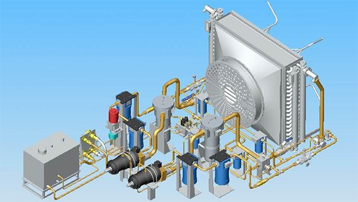

部件装配
这里介绍油泵车中液压系统的部件构成情况，重点标出了易损件、各接口处的密封件等，零件列表可以使使用者更清晰的了解该部件的组成。
返回上级菜单
高压油滤
精密油滤
单向阀组件
流量传感器
低压油滤
回油油滤
加油油滤
截止阀
采样活门
变速箱

 这里介绍油泵车中液压系统的部件构成情况，重点标出了易损件、各接口处的密封件等，零件列表可以使使用者更清晰的了解该部件的组成。
这里介绍油泵车中液压系统的部件构成情况，重点标出了易损件、各接口处的密封件等，零件列表可以使使用者更清晰的了解该部件的组成。
这里介绍油泵车中液压系统的部件构成情况，重点标出了易损件、各接口处的密封件等，零件列表可以使使用者更清晰的了解该部件的组成。
这里介绍油泵车中液压系统的部件构成情况，重点标出了易损件、各接口处的密封件等，零件列表可以使使用者更清晰的了解该部件的组成。
这里介绍油泵车中液压系统的部件构成情况，重点标出了易损件、各接口处的密封件等，零件列表可以使使用者更清晰的了解该部件的组成。
这里介绍油泵车中液压系统的部件构成情况，重点标出了易损件、各接口处的密封件等，零件列表可以使使用者更清晰的了解该部件的组成。